Visual Analytics for Profitability & Volatility Discovery
2026-05-14
Part 1: Dataset Overview
Part 2: Portfolio Composition
Part 3: Profitability Analysis
Part 4: Volatility Analysis
Source: Spanish motor insurer microdata
Period: January 2022 – December 2024
Records: 354,140 policy transactions
Variables: 47 across 4 groups
| Group | Variables |
|---|---|
| Policy & Insured | 8 |
| Driver & Vehicle | 10 |
| Premiums | 8 |
| Claims & Incurred | 21 |
Three derived metrics guide analysis:
\[\text{Loss Ratio} = \frac{\text{Incurred}}{\text{Premium}}\]
\[\text{Claim Freq} = \frac{\text{Claims}}{\text{Exposure}}\]
\[\text{Severity} = \frac{\text{Incurred}}{\text{Claims}}\]
Note
Loss Ratio < 1 = Profitable
Loss Ratio > 1 = Unprofitable
| Code | Full Name | Coverage |
|---|---|---|
| TP | Third-Party Only | Liability to others only |
| TPG | Third-Party + Glass | Liability + windscreen |
| CC | Third-Party + Add-ons | Liability + theft, fire, glass, legal |
| COMP/E | Comprehensive with Excess | Full coverage, policyholder pays excess |
| COMP/N | Full Comprehensive | Full coverage, no excess |
Note
CC, COMP/E and COMP/N are the three broadest coverage types and together account for 88.2% of the portfolio. These are the focus of our profitability analysis.
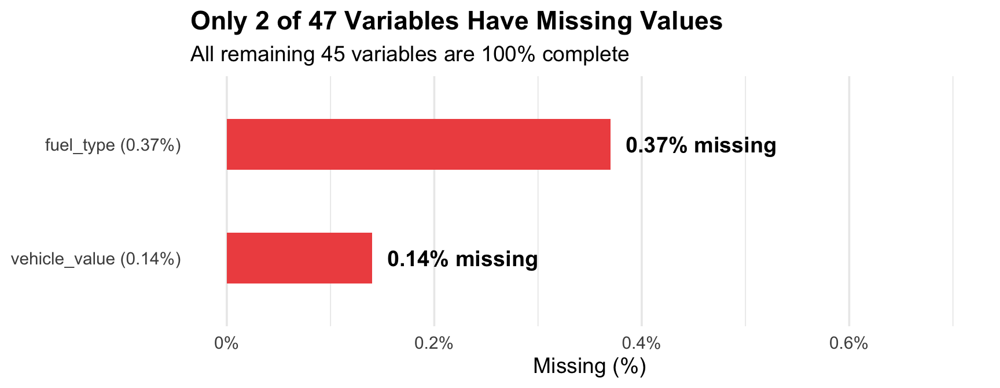
fuel_type: 0.37% missing — excluded when fuel type is analysedvehicle_value: 0.14% missing — excluded when vehicle value is analysed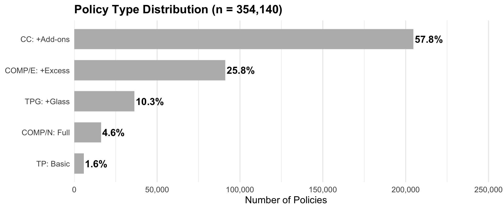
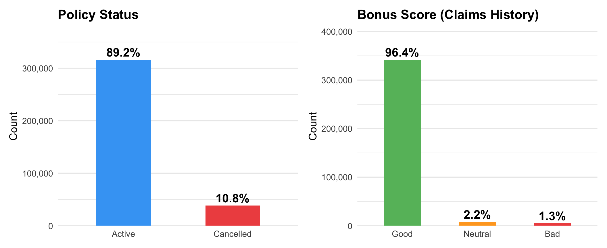
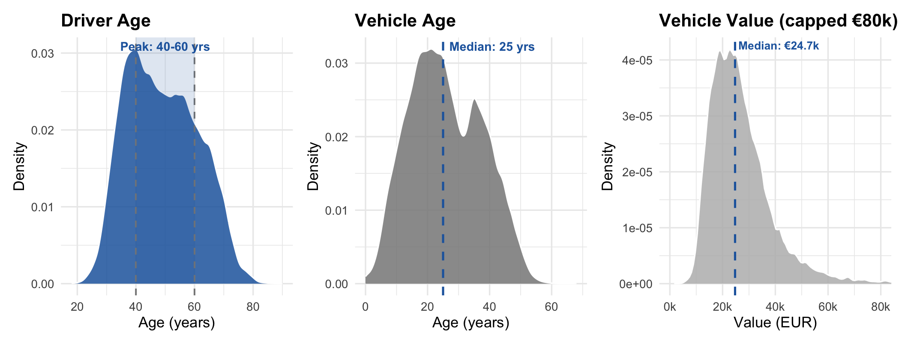
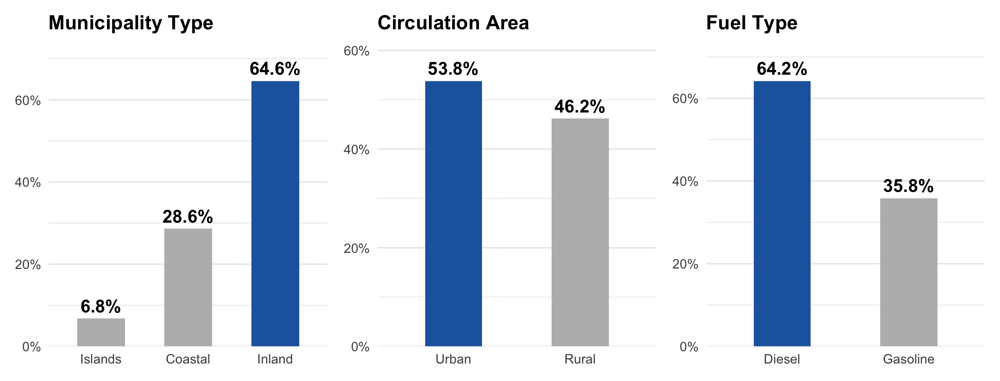
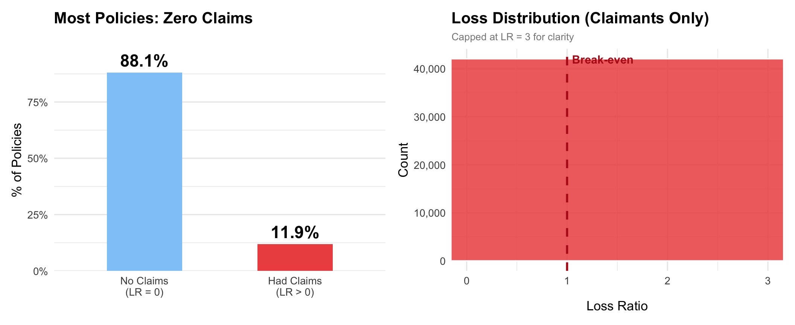
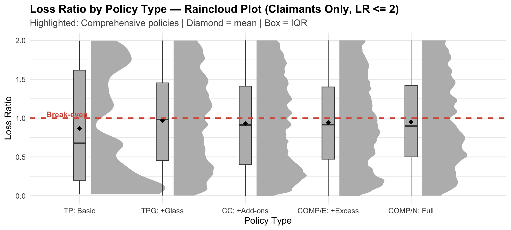
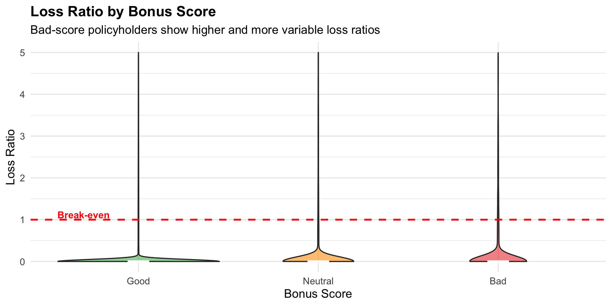
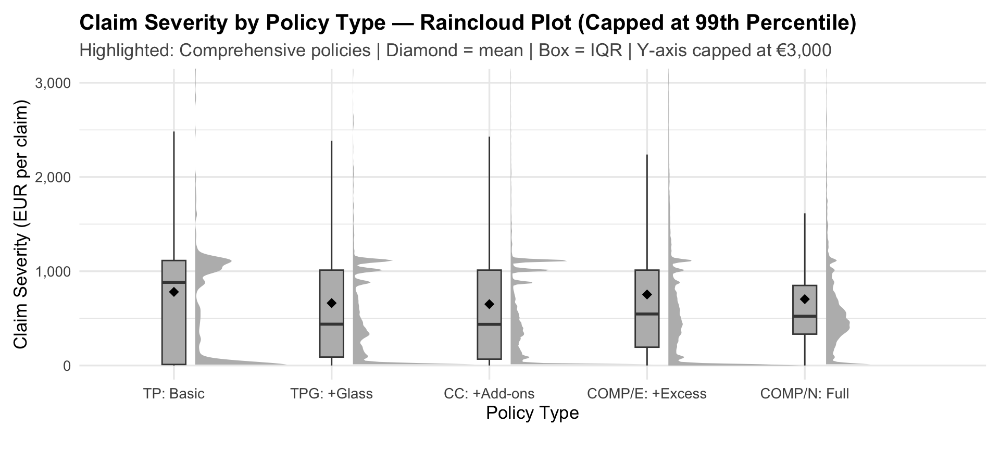
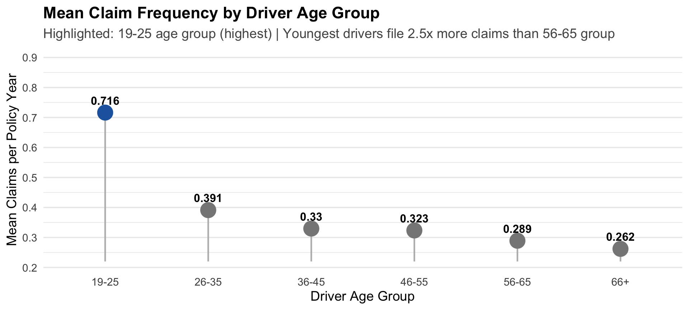
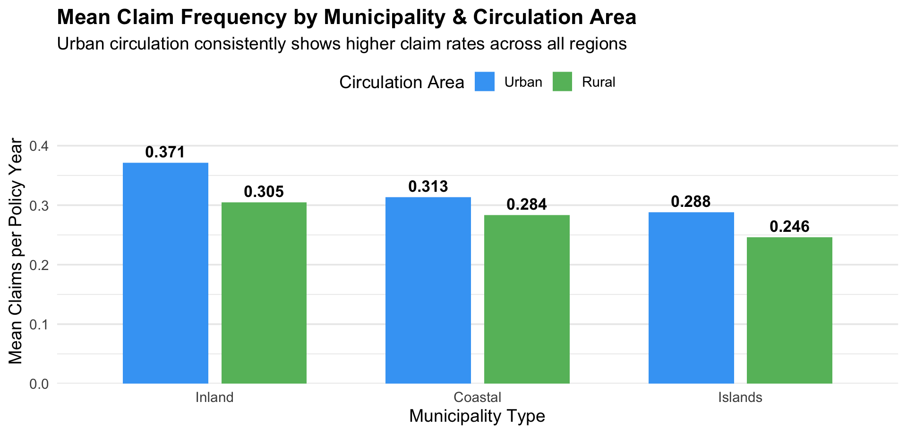
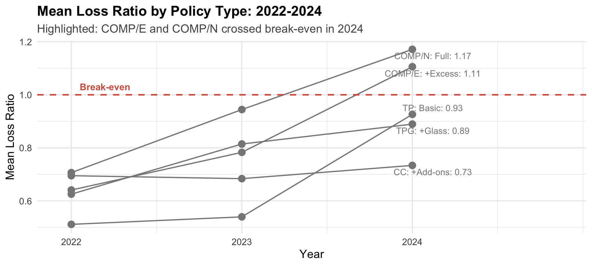
Profitability
Volatility
Important
Core finding: 88.1% of policies have zero claims. The portfolio’s challenge is that COMP/N and COMP/E (full comprehensive policies) have now crossed break-even — the insurer is losing money on these segments.
Espinosa, P., Lledó, J., & Atance, D. (2026). A detailed dataset of motor insurance policies with coverage-specific financial information. Mendeley Data. https://doi.org/10.17632/sw4jmdb2sm.1
Swiss Re Institute. (2019). sigma 4/2019: World insurance: the great pivot east continues. Swiss Re.
Wickham, H. (2016). ggplot2: Elegant Graphics for Data Analysis. Springer-Verlag New York.
Wilke, C. O. (2019). Fundamentals of Data Visualization. O’Reilly Media.
Kay, M. (2024). ggdist: Visualizations of Distributions and Uncertainty. R package. https://mjskay.github.io/ggdist/
ISSS608 Take-home Exercise 1 | ZeXin Chen | ↩︎ Back to Site